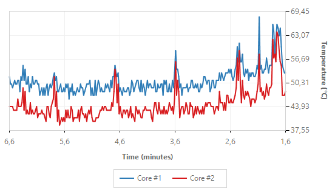

Graph
Advanced visualization for CPU temperature analysis
HeatMon Graph Visualization Interface
The Graph feature in HeatMon is an advanced visualization tool that converts numerical temperature data into easy-to-understand graphical representations. This allows you to analyze your CPU's thermal behavior in a more in-depth and professional manner.
1. Basic Concept: What Does the Graph Show?
- Y-axis (Vertical): Shows the temperature in degrees Celsius (°C). This scale automatically adjusts based on the highest and lowest temperatures of all monitored cores, providing a 5% margin for optimal visibility.
- X-axis (Horizontal): Shows the time in minutes. The graph displays the last 5 minutes of data, with the axis moving from right to left (reversed), simulating the rolling graph or strip chart display commonly found in industrial equipment. The rightmost point is the most recent data.
- Lines: Each colored line represents the temperature of one CPU core over time. You can select any core you want to display.
2. Advanced Features in the Graphics Window
The graph window is equipped with a context menu (right-click) that provides full control:
- Save as Image:
- Function: Exports the currently displayed graph to an image file.
- How to: Right-click on the graph → Select "Save as Image". Select the desired format (PNG, JPG, BMP) and storage location.
- Professional Use: Very useful for documentation, presentations, or reporting bugs to the support team. You can include images as visual evidence of overheating issues.
- Print:
- Function: Prints the graph directly to a connected printer.
- How to: Right-click on the graph → Select "Print".
- Professional Use: Obtains a physical copy for archiving or team discussions.
- Change Theme:
- Light Theme (Default): Bright and clean display, ideal for bright rooms or daylight conditions.
- Dark Theme: Dim, dark display that reduces glare and is easier on the eyes in low-light conditions. Suitable for long-term monitoring.
- Gradient Theme: An aesthetically pleasing display with a gradient background.
- Legend:
- At the bottom of the graph is a legend that shows the colors and names for each core being plotted.
- This legend is interactive. You can click on the core name in the legend to hide or show the core line again without having to open the main window. This is very useful for simplifying a crowded graph display.
3. Professional Use Scenarios
- Stress Testing & Benchmarking:
- Run a CPU load application (such as Cinebench, Prime95).
- Observe the HeatMon graph. You will see the lines rise sharply.
- Analysis: Does the temperature stabilize at a certain point or continue to rise? Is there one core that is consistently hotter than the others (uneven cooling)?
- Diagnosing Overheating:
- If your computer suddenly slows down (thermal throttling), open HeatMon and look at the graph.
- You can clearly see when and how quickly the temperature spikes into the red zone, helping you identify the triggering application.
- Testing Cooler Effectiveness:
- After running the stress test, stop the test.
- Observe the graph to see how quickly the temperature lines drop. The slope of the decline line indicates how efficiently your CPU cooler is dissipating heat.
- Workload Analysis:
- Observe the graph while performing different tasks (gaming, browsing, video editing).
- Each type of workload will produce a unique "fingerprint" or pattern of temperature increase on the graph.
Conclusion
The HeatMon Graph feature transforms the application from a simple monitor into an analytical tool. By providing time context to temperature data, this feature empowers you to not only view the current status but also understand trends, relationships, and historical performance of your CPU cooling system, which is crucial for maintaining the long-term health and performance of your computer.